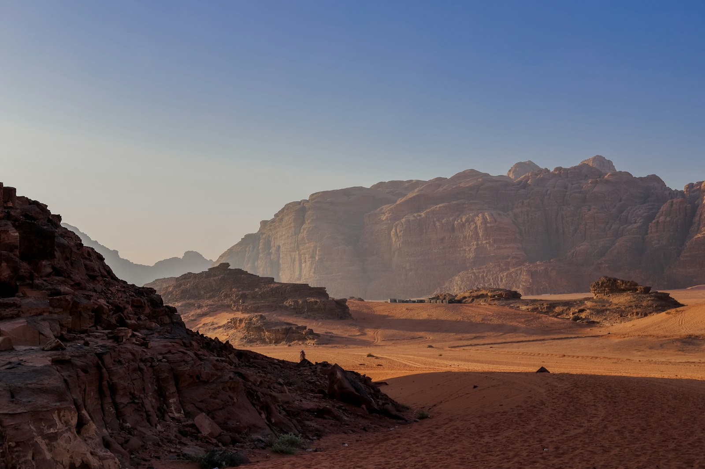
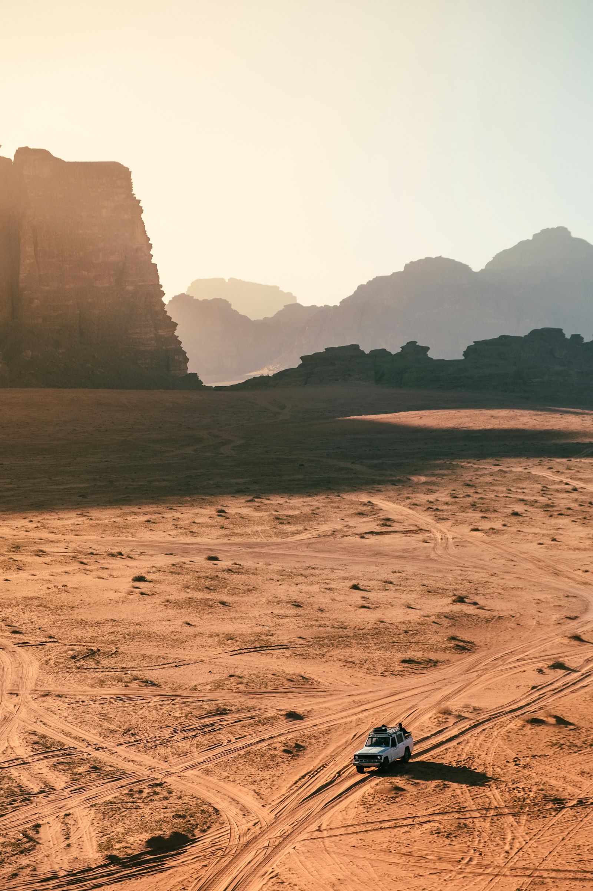

LineEscape started with two friends, one battered Land Cruiser, and a stubborn belief that Jordan deserved better than the coach-tour treatment.

Aymen grew up in Wadi Rum village; Nadia was guiding hikers around Dana before it was fashionable. They met on a trail in 2017, got tired of watching visitors get herded past the best of the country, and started running the trips they wished existed.
Nine years on we're still small on purpose. We'd rather run fewer trips well than fill buses. Every itinerary is one we've done ourselves, every guide is someone we'd travel with, and every camp is a family we've known for years.
Co-founder · Lead guide
Co-founder · Trip design
Guide · Wadi Rum
Guides, camps, drivers and cooks are all Jordanian, most from the regions we visit. The great majority of what you pay stays in the south.
Small groups, no single-use plastic on trips, and we carry out everything we carry in. The desert stays the way we found it.
We book the same Bedouin families year after year and pay them fairly and on time. It's why the welcome is genuine.

Set date or private trip, three days or ten - let's find the right one for you.